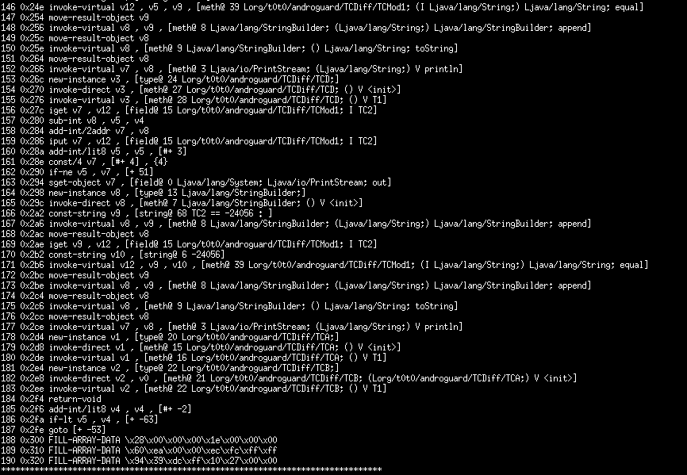
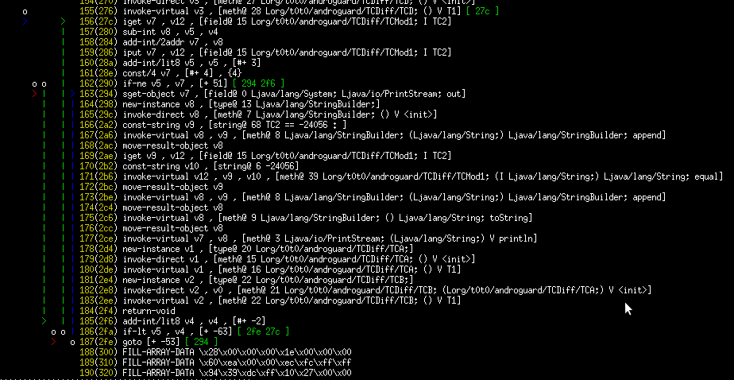
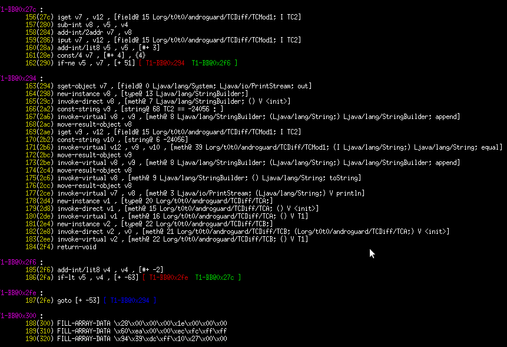
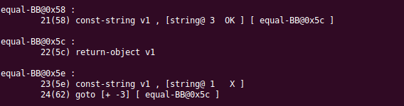
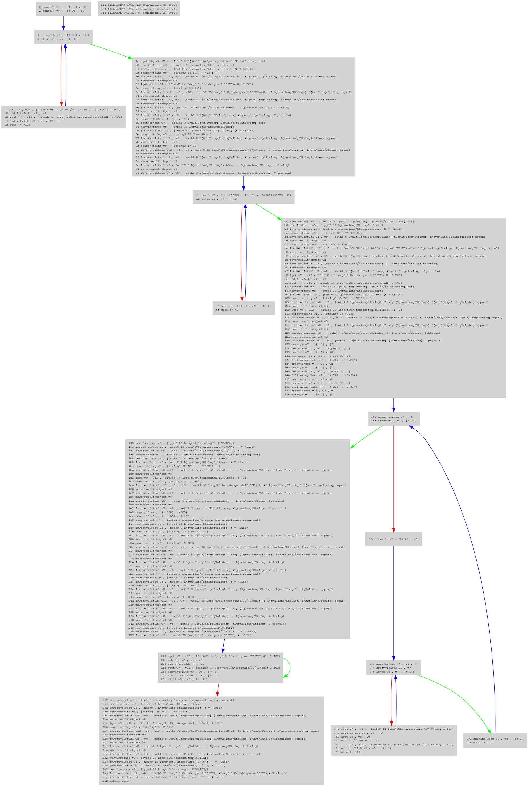

Visualization
ASCII
The first mode to visualize methods is ascii.
default
You can use directly the method show with a method object :
for method in a.get_methods() :
method.show()

pretty
But it's more interesting to display the CFG of the method by using the pretty show method.
The first display draw automatically edges between nodes :
import dvm
import analysis
d = DalvikVMFormat( open("test.dex").read() )
x = analysis.VMAnalysis( d )
for method in a.get_methods() :
method.pretty_show( x )

With
big methods, this display is not very useful, this is why you can
choose a more classical view (IDA view) by using the set_pretty_show
method (with the value 1) :
import dvm
import analysis
import bytecode
d = dvm.DalvikVMFormat( open("test.dex").read() )
x = analysis.VMAnalysis( d )
bytecode.set_pretty_show( 1 )
for method in a.get_methods() :
method.pretty_show( x )

Or without color :
import dvm
import analysis
import bytecode
d = dvm.DalvikVMFormat( open("test.dex").read() )
x = analysis.VMAnalysis( d )
bytecode.set_pretty_show( 2 )
for method in a.get_methods() :
method.pretty_show( x )

DOT
Every method can be translated in DOT format with pydot :
import dvm
import analysis
import bytecode
d = dvm.DalvikVMFormat( open("test.dex").read() )
x = analysis.VMAnalysis( d )
# m will be an EncodedMethod
m = d.get_method_descriptor("Lorg/t0t0/androguard/TC/TCMod1;", "T1", "()V")
# get the analysis method and transform it in dot
buff_dot = bytecode.method2dot(x.get_method( m ))
print buff_dot
When
you have obtained the dot format, with pydot you can display it in
differents graphics formats ('canon', 'cmap', 'cmapx', 'cmapx_np',
'dia', 'dot', 'fig', 'gd', 'gd2', 'gif', 'hpgl', 'imap', 'imap_np',
'ismap', 'jpe', 'jpeg', 'jpg', 'mif', 'mp', 'pcl', 'pdf', 'pic',
'plain', 'plain-ext', 'png', 'ps', 'ps2', 'svg', 'svgz', 'vml', 'vmlz',
'vrml', 'vtx', 'wbmp', 'xdot', 'xlib').
To do that you must used the method2format function :
import dvm
import analysis
import bytecode
d = dvm.DalvikVMFormat( open("test.dex").read() )
x = analysis.VMAnalysis( d )
# m will be an EncodedMethod
m = d.get_method_descriptor("Lorg/t0t0/androguard/TC/TCMod1;", "T1", "()V")
# get the analysis method and transform it in dot
buff_dot = bytecode.method2dot(x.get_method( m ))
method2format( "toto.jpg", "jpg", raw=buff_dot )
# or without the dot buffer because method2format can call it directly
# method2format( "toto.jpg", "jpg", x.get_method( m ) )
PNG
import dvm
import analysis
import bytecode
d = dvm.DalvikVMFormat( open("test.dex").read() )
x = analysis.VMAnalysis( d )
# m will be an EncodedMethod
m = d.get_method_descriptor("Lorg/t0t0/androguard/TC/TCMod1;", "T1", "()V")
# get the analysis method and transform it in png
bytecode.method2png("visu4.png", x.get_method( m ))
